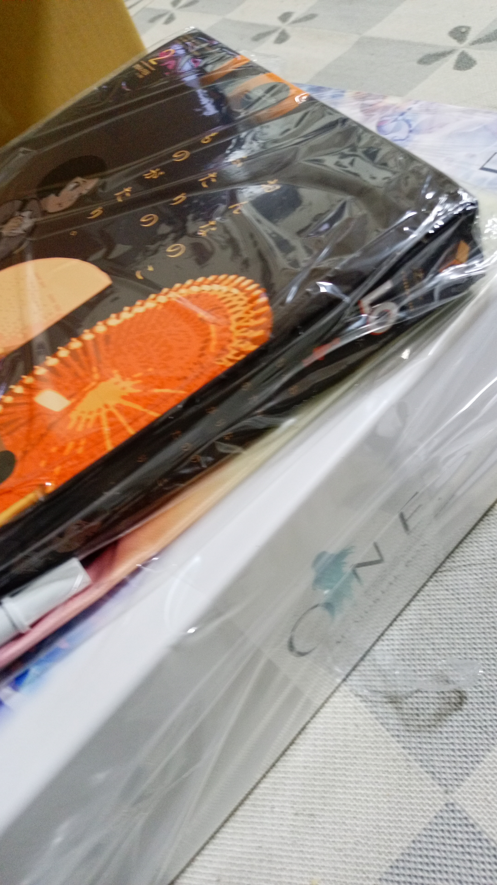
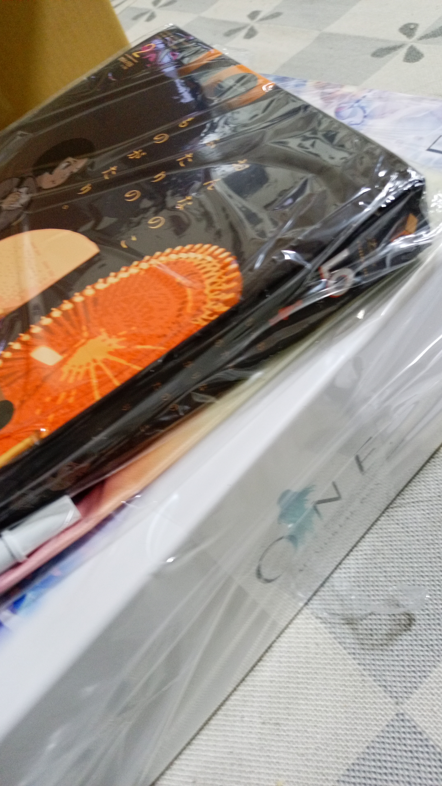

今年ももう終わりが見えてきたわけですが、今年も良いことも悪い事も相応に相変わらず可処分所得時間に悩まされた年であった。
きっとこれは来年も変わらないだろう。
来年はNHKの「プロジェクト X」が復活したり、「劇場版 魔法少女まどかマギカ」の新作が公開予定だったりと、もちろん失望させられる可能性も否定しきれないが期待のある年である。
良いお年をお迎えください。
そろそろ年末ですな。
今年ももう終わりが見えてきたわけですが、今年も良いことも悪い事も相応に相変わらず可処分所得時間に悩まされた年であった。
きっとこれは来年も変わらないだろう。
来年はNHKの「プロジェクト X」が復活したり、「劇場版 魔法少女まどかマギカ」の新作が公開予定だったりと、もちろん失望させられる可能性も否定しきれないが期待のある年である。
良いお年をお迎えください。
